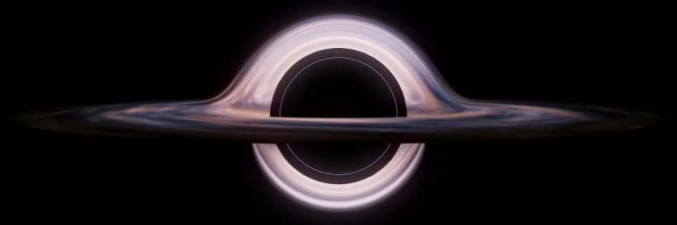
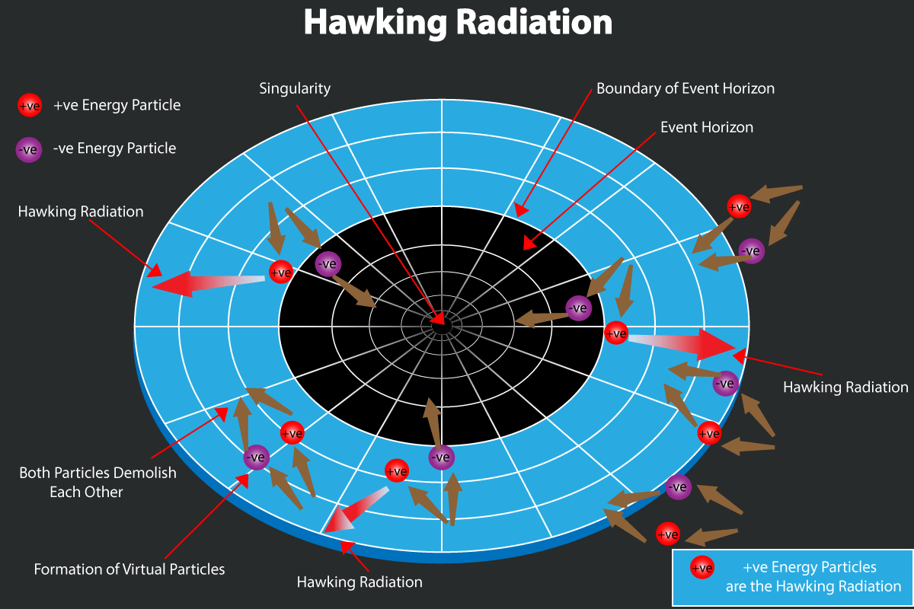

[04/12/23] Hawking's radiations are not constant .
Published by: Chirag Roy
Hello there readers, won't you be surprised to know that black holes have to become bias for maintaining it's conservation of energy. Believe me it's more exciting then it sounds. This article is suitable for both science and non-science readers. You can skip the derivation or the formulas if you want as those are just for the people who really want to know what is the reason behind it.
What are "Hawking's Radiations" ?
Hawking radiation is the electromagnetic radiation given out by the just outer layer of the event horizon. Everything in this universe that has a temperature must emit electromagnetic radiation now as because black hole has a finite temperature, it must also radiate thermal radiation known as black body radiation.
The idea behind Hawking radiation is rooted in the principles of quantum mechanics and the concept of virtual particles. According to quantum mechanics, particles and antiparticles can spontaneously appear and annihilate each other near the event horizon of a black hole. The event horizon is the boundary around a black hole beyond which nothing can escape its gravitational pull.
In the context of Hawking radiation, one of these particles (let's say a particle) falls into the black hole, while the other (antiparticle) escapes into space. Because the particles are created near the event horizon, the one that falls in can never re-emerge, and the one that escapes effectively becomes real and can be detected as radiation
Hawking's theory implies that black holes are not completely black but emit faint radiation, causing them to lose mass and eventually evaporate over time. This process has profound implications for our understanding of the nature of black holes and the fate of information that falls into them. However, as of my last knowledge update in January 2022, experimental confirmation of Hawking radiation had not been achieved, and it remains one of the outstanding challenges in theoretical physics.
Conservation of energy
The creation of these particles requires energy, and since they are created from the vacuum, it might seem like energy is being created out of nothing. However, this apparent violation of energy conservation is allowed by the Heisenberg uncertainty principle, a fundamental concept in quantum mechanics. The uncertainty principle allows for temporary violations of energy conservation as long as the energy is "borrowed" for a short period, and the borrowed energy is later returned.
The conservation of energy is maintained when considering the entire system, including the black hole and the escaping particle. The energy borrowed from the vacuum near the black hole is returned when one of the particles falls in, and the net effect is a decrease in the black hole's mass. This delicate interplay between quantum mechanics, gravity, and the conservation of energy is a fascinating aspect of Hawking's work and our understanding of the behavior of black holes.
Why are not (they) constant?
So, now we know that the energy borrowed by the black hole is released back by the black hole and thus the energy remains constant and conserved. But this theory looks good from the surface but what if we "Dive in deep" into this theory and then we will know the real distrubution of the release of the "Black Body Radiation Particles" also known as "Hawking's Radiations".
According to Stephen Hawking, black holes emit radiation and formula for temperature of the black hole is
Now what if the black hole also has kinetic energy then you can say total energy of black hole is:
When a black hole emits Hawking radiation, it expends its energy (E). However, this process alone is insufficient for preserving the momentum of a mobile black hole, presenting a challenge in maintaining both energy and momentum conservation.
Consider a scenario where a black hole, possessing mass (M) and moving with velocity (v) along the X direction, exhibits momentum (Mv) in that direction. As the black hole vanishes, converting its rest mass energy and kinetic energy into Hawking radiation, energy conservation is maintained. However, to uphold the conservation of momentum, the black hole must emit the kinetic component of its total energy specifically in the direction of its motion. Exploring how this process unfolds allows us to understand the preservation of both energy and momentum in the dynamics of a moving black hole.
As the black hole undergoes continuous mass reduction through Hawking radiation, its momentum also steadily decreases. Assuming a change in mass (𝛿𝑀), the corresponding change in momentum is 𝛿𝑀𝑉. To uphold momentum conservation, the black hole emits additional particles as Hawking radiation in the direction of its motion. The cumulative momentum of these emitted particles, aligned with the motion of the black hole, equals 𝛿𝑀𝑉, ensuring the preservation of momentum during the process.
The thrilling concept here is that moving black holes possess a magnetic allure for virtual particles in the exhilarating dance of the cosmos. Unlike their stationary counterparts, these cosmic speedsters voraciously attract more virtual particles in the direction of their motion. The result? An extravagant emission of particles, a celestial fireworks display of Hawking radiations precisely choreographed in the rhythm of their cosmic journey.
Picture this: as these dynamic black holes hurtle through space, they unleash a torrent of Hawking radiations, a cosmic spectacle where energy and momentum are intricately conserved. The spectacle unfolds with a flourish as the black hole sheds mass through Hawking radiation and kinetic energy by orchestrating a grandiose emission of particles aligned with its relentless motion.
In the cosmic ballet of physics, the temperature of these moving black holes, along with the intensity of Hawking radiations, reaches celestial highs in the direction of their bold motion. This cosmic symphony, reminiscent of the Doppler effect, mirrors the enthralling interplay between a moving black hole and the virtual particles it irresistibly draws into the cosmic embrace. The result is a cosmic spectacle where energy conservation and momentum preservation unfold in a breathtaking cosmic waltz.
Derivation of temperature of the Black Hole. (Ignore if non science reader)
Now put Eq.(2) in Eq.(1) we get
So, now the total temperature of the black hole is
here;
and;
so finally ,
T is the temperature that black hole has in its direction of motion it consist of two terms TH (It is normal Hawking temperature its value depends upon mass of black holes). TO (it is additional term its value depends upon the square of velocity and it is (v )squared divided by twice the (c) squared times the Hawking radiation
TO term is directly proportional to (v) squared so larger the velocity of black hole more no of particles black hole will suck in its direction of motion. So black hole has (v )squared divided by twice the (c) squared times more temperature in its direction of motion.
Kinetic energy depends two factors mass and velocity. If one of them goes to zero or decrease kinetic energy goes to zero or decrease. In the case of black hole mass of black hole will decreases continuously due to Hawking radiation so assume velocity remain constant.
Final Conclusion:
Kinetic energy depends two factors mass and velocity. If one of them goes to zero or decrease kinetic energy goes to zero or decrease. In the case of black hole mass of black hole will decreases continuously due to Hawking radiation so assume velocity remain constant. The intriguing aspect is that TO is directly proportional to the square of the velocity (v), implying that a swifter-moving black hole attracts a greater number of particles in its direction of motion. Consequently, the black hole experiences an elevated temperature in this direction, akin to the Doppler effect in its cosmic dance.
Now, considering the kinetic energy, which hinges on both mass and velocity, we find that a decrease in either factor leads to a reduction in kinetic energy. In the relentless cosmic drama, as the black hole steadily loses mass due to Hawking radiation, we assume a constant velocity. This ongoing mass loss, combined with the velocity factor, emphasizes the dynamic relationship between velocity, temperature, and kinetic energy in the intricate cosmic ballet of a moving black hole.